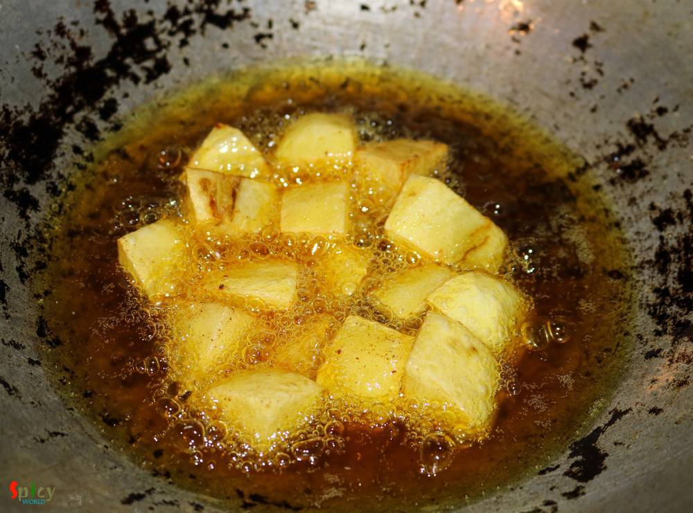

Simple and Easy Recipes
Maacher Jhuri / Crumbled Fish curry
© 2016 Spicy World, Published on: Jul 8, 2016
This particular recipe calls for 'bombay duck fish' / loitta maach, but we couldn't get fresh bombay duck here, that's why I used rohu. 'Macher Jhuri' is nothing but a dry preparation of crumbled / mashed fish, which is typically bengali and goes best with steamed rice. Don't forget to add cubed potatoes because without them this curry will be totally incomplete. Try this easy recipe in your kitchen and let me know how it turns out for you.

Ingredients
- 4 pieces of fish.
- 1 potato, cut into cubes.
- 1 onion, finely chopped.
- 1 Teaspoon of ginger and garlic paste.
- 1 small tomato, chopped.
- 3 green chilies.
- Whole spices (1 Teaspoon of cumin seeds, half Teaspoon of crushed coriander seeds, 1 dry red chilli / 1 Teaspoon of chilli flakes).
- Salt and sugar.
- 6 Tablespoons of mustard oil.
- Spice powder (1 Teaspoon of turmeric powder, 1 Teaspoon of red chilli piwder, 1 Teaspoon of roasted cumin powder, Half Teaspoon of garam masala powder).
- 3 Tablespoons of chopped coriander leaves.
- Water.


Steps
Rub some salt and turmeric powder all over the fish pieces. Then fry then in hot mustard oil for 5 minutes or till they become crispy.
Then remove them from oil, let them cool down a bit and then crumble the fish pieces with your hand.
In the same oil fry the potato cubes for 5 minutes in high flame. Then remove them from oil.
Add all the whole spices in the remaining oil. Saute for few seconds.
Then add the chopped onion with pinch of salt. Fry till they become golden in colour.
Add ginger and garlic paste. Cook for 3 minutes.

Now add the chopped tomato along with a Teaspoon of sugar. Cook till the gravy starts releasing oil.
Now add all of the spice powder. Mix well for 5 minutes.
Then add green chilies and fried potato cubes. Mix well.
Add some water and cook for 15 minutes.
Now add the crumbled fish and some salt. Mix very well and cook for another 10 minutes.
Lastly add some chopped coriander leaves. Mix well and turn off the heat.
Let it rest for few minutes then serve.
Your maacher jhuri is ready ....
Enjoy it hot with some steamed rice and salads ...
")